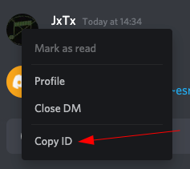
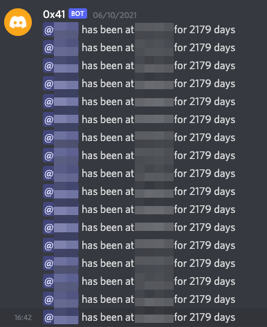
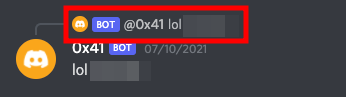
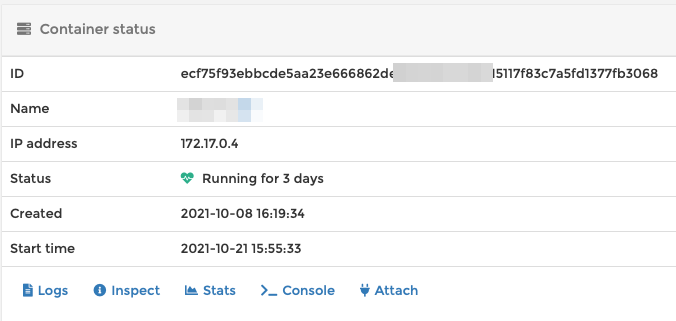

Spamming Friends with Discord Bot's
Recently a few ex-colleagues and I created a Discord server to stay in touch with one another. This gave me an idea to create a bot that would remind us of events that took place when we worked together. Also be semi-annoying to people still working there.
Discord allows you to create a bot from their developer portal and once you've set that up you'll be given a token to authenticated. I'm not going to tell you how to do this, as there are very good guides that do this.
For my bot, I chose to use the python library just because python was easier for me. Once downloaded the first thing was to try to build out a simple command. If anyone has ever worked with me they would know that I'm a fan of the smart questions page by Eric Steven Raymond. So it seemed logical to start with that as my first command, and the code looked a little bit like this.
#!/usr/bin/env python3 import discord from discord.ext import commands bot = commands.Bot(command_prefix='!') @bot.command() async def thelink(ctx, *args): await ctx.send('http://www.catb.org/~esr/faqs/smart-questions.html') def main(): bot.run('TOKEN') if __name__ == '__main__': main()
Once the bot was up, anyone (normally me) could use the command !thelink and the bot would reply with the smart questions link.
Great start. So a few commands later, I wanted to start tagging (mentioning) people. This is where the documentation is not very clear in my opinion, but a few google searches later, I discovered that you needed to find and provide that persons user ID, and then you can mention them with the bot's reply. To do this, you need to enable developer mode in Discord's settings, and then you can copy the ID of the person you want to mention in the bot's code.

Now that I have this I accidently ended up spamming the person.

Another gotcha I had was comment matching. The bot has the ability to respond to comments that match a certain criteria, seeing as I did not want to break out the regex for a silly bot, I had some interesting results.
A few commits later, I changed the matching to be a more specific string. But I was still having the problem where the bot would reply to itself.

This one was an easy fix. I just had to change the bot to reply to the original message only if the sender was not the bot itself.
if "MATCHED STRING" in message.content.lower(): if message.author.bot: return await message.reply('lol MATCHED STRING')
Over Engineering the Deployment
The only problem with the bot was that the script had to be running forever, meaning I needed to having it running on a system that was up for the majority of the time. Because I made a local repo for the code, I decided to make a Dockerfile for each bot, and then after any commit, a CI/CD pipeline would run that would re-deploy the container. As I used poetry for the python project, here is the Dockerfile I ended up using.
FROM d21d3q/arm32v7-python-poetry COPY . /discordbot WORKDIR /discordbot RUN apt-get update && \ pip3 install --upgrade pip && \ poetry build && \ pip3 install dist/*.tar.gz CMD bot
Now, when I commit a change to the bot's code, the pipeline runs, and re-deploys the container.
